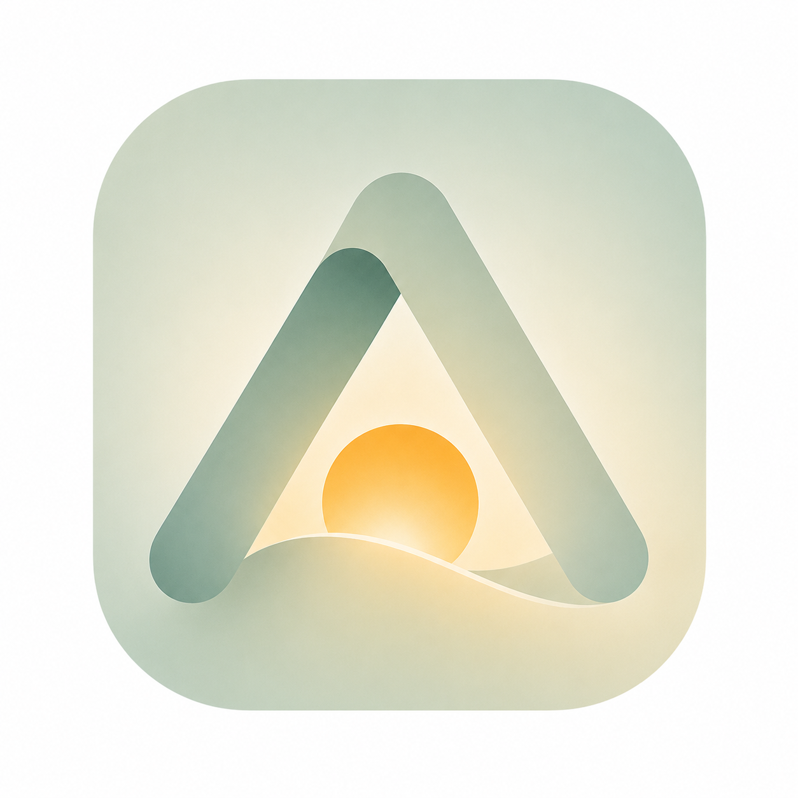

明日の自分のためのサービス
人は未来に楽しみがあると、前向きになれる。 でも疲れているとき、何が楽しいかさえわからない。 ASTOmeは、その「次の楽しみ」を一緒に見つけます。
疲れているのはわかっている。でも何をすれば回復するか、忘れてしまった。
WHO（世界保健機関）が開発したウェルビーイング尺度「WHO-5」で、あなたの変化を月次で記録します。
楽しみを見つけることに、終わりはない。 人生のずっと隣にいるサービスを目指しています。
現在、先行登録を受け付けています。リリース時に最初にご案内します。
無料 · いつでも解除できます